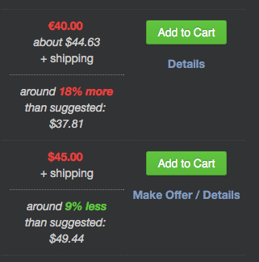

Dark theme
This makes Discogs much easier on the eyes at night. Or all the time. Honestly, after working on this extension, I can't even stand looking at Discogs without the dark theme applied.
Marketplace Highlights
This will colorize the Media and Sleeve conditions in the Marketplace. Mint, Near Mint, Very Good Plus, Very Good, Good Plus, Good, Fair and Poor all have unique colors which makes it easier to see what condition the items are in.
Sort Buttons
This adds Sort A-Z buttons on all kinds of things. You can sort the dialog boxes on the Explore page, your personal lists in the 'Add to list' dialog boxes, and any filter within the Marketplace. The first click sorts A-Z, the second click sorts Z-A and the third click returns the list to its original state (aka undo).
Release Durations
This will show the total playing time of a release (if track times are provided) at the bottom of the track list.
Better Collection UI
This makes the Collection page a little more organized and easier to understand. It groups the "Random item" link over with the others on the right. It rearranges the "Move Selected" interface so that it's easier to understand. It more clearly specifies which folder you are currently viewing and colorizes the "Remove Selected" and "Move Selected" buttons. It also disables the "Move Selected" button until a selection has been made. If this sounds confusing go to your collection page and try turning the option on and off.
Suggested Prices (beta)
This will show the prices that Discogs suggests and compare them to the seller's price in your country's currency. Its useful for seeing if an item is overpriced. If the listed price is within 1% of the suggested price, it will say it's "around the same price". In order for this to work you must be registered as a seller.
How to use the Suggested Prices feature:
First choose your currency from the select box. It must be the same currency you use on Discogs:
 Next turn the option on:
Next turn the option on:
 For release pages, the prices are displayed automatically.
For pages like Wantlists, Seller pages or Master Releases a link is inserted into the page:
For release pages, the prices are displayed automatically.
For pages like Wantlists, Seller pages or Master Releases a link is inserted into the page:
 Clicking this link will show the comparison for that particular listing:
Clicking this link will show the comparison for that particular listing:
 You might be wondering why it's necessary to click a link on some pages. This is because on pages with a link, a call to Discogs must be made for each item listed. Depending on your preferences, this could be up to 250 calls per page! In order to keep it to a minimum (and not upset Discogs) the calculations will only happen upon user request.
You might be wondering why it's necessary to click a link on some pages. This is because on pages with a link, a call to Discogs must be made for each item listed. Depending on your preferences, this could be up to 250 calls per page! In order to keep it to a minimum (and not upset Discogs) the calculations will only happen upon user request.
Results are displayed in the currency that is set in your seller settings. Because currencies shift due to global market fluctuations and release prices shift due to market demand, the recommended price may differ from the listed price. I make no claims about the accuracy of these numbers. Exchange rate data comes from fixer.io and is updated (at most) once a day or whenever fixer.io updates their data. Discogs likely uses a different exchange service so their exchange rates might differ slightly from fixer.io's rates. Use and interpret at your own risk. Please don't use it as an excuse to be a jerk to sellers.
This feature is still in beta. It *should* work with currencies outside the US but I cannot test them without screwing up my Discogs seller account. If you have any issues, please let me know!
Contextual Menu Options
You can now search other online record shops with any text selected on any page. Simply highlight some text, right click, and choose the shop you want to search. You can configure which shops you want to use by hovering over the "Contextual Menu" option inside Discogs Enhancer. Current selection includes: Bandcamp, Boomkat, Clone, DeeJay, Discogs, Gramaphone, Halcyon, Hardwax, InSound, Juno, Oye and Pacific Beach Vinyl.
Troubleshooting
If you are seeing issues like Marketplace highlighting no longer working or just odd behavior in general, try restarting Chrome. Sometimes things get wonky after Chrome updates the extension.
About the author
Thanks for checking out my extension! If you have any suggestions or complaints you can find me here on twitter!
Updates!
- Finally wrote some unit tests and fixed some issues I didn't know existed. Unit tests are pretty dang great.
- Suggested prices will now display in the user's localized format. This extension still needs translations. If you'd like to help, please get in touch!
- Fixed issue where marketplace highlights wouldn't work if language was not English.
- You can now see suggested prices! This is in beta and will not work in all situations. Please read the description above for details.
- Fixed an issue with select element colors for Windows users. Thanks /u/unowndanger!
- If you have a lot of lists that you maintain, you can now sort your lists! Look for the sort button on the 'Add to list' dialog boxes.
- Thanks for reading!
Disclaimer
Discogs Enhancer is not affiliated with Discogs.com. This program is distributed in the hope that it will be useful, but WITHOUT ANY WARRANTY; THE SOFTWARE IS PROVIDED "AS IS", without warranty of any kind, express or implied, including but not limited to the warranties of merchantability, fitness for a particular purpose, title and non-infringement. in no event shall the copyright holders or anyone distributing the software be liable for any damages or other liability, whether in contract, tort or otherwise, arising from, out of or in connection with the software or the use or other dealings in the software.